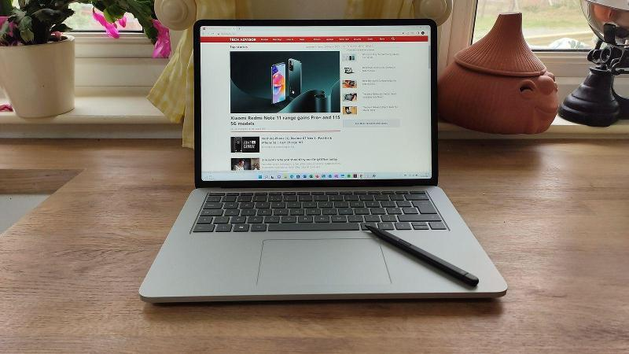

Découvrir les derniers cris des appareils mobiles et bureautiques
+490 34 890 43
NewTechOfficial
new_tech
newtech@gmail.org
NewTech
Huawei MateBook 14s (2021) - Le meilleur dans tous les domaines
Les Plus
Beaucoup de puissance et de ports
Clavier excellent
Écran 90Hz
Webcam fixe
Les Moins
Design ordinaire
Webcam seulement 720p
Thunderbolt 4 limité au modèle plus cher
Plus de details...
Le MateBook 14s, une version améliorée du MateBook 14 (également excellent), est un autre appareil polyvalent souhaitable sur le marché des ordinateurs portables, surtout que la webcam est de retour au-dessus de l'écran plutôt que camouflée dans le clavier.
Elle n'est que de 720p mais prend en charge la connexion Windows Hello.
Le 14s est également impressionnant au niveau des composants allant jusqu'à un processeur i7 de série H et 16 Go de RAM.
De plus, l'écran 2,5K offre un taux de rafraîchissement fluide de 90 Hz et les ports sont nombreux.
Il est juste dommage que Thunderbolt 4 soit limité au modèle haut de gamme et qu'il existe des rivaux plus fins et plus légers si la portabilité est votre priorité.
Apple MacBook Air (M1) - Le meilleur MacBook
Les Plus
Beaucoup de puissance et de ports
Composants puissants
Longue autonomie
Applications iOS
Les Moins
Ports très limités
Performances limitées
Plus de details...
Le MacBook Air n’a peut-être pas l'air différent de son prédécesseur, mais ce qui compte dans cette nouvelle version c’est son hardware.
Offrant une amélioration significative par rapport à la puce Intel 10 nm de la gamme Air précédente, la puce maison M1, gravée 5 nm, est incroyablement rapide et permet de réaliser des montages vidéo légers et de jouer sans lag.
Le Air prend son envol et se trouve davantage boosté que de nombreux ordinateurs Windows basées sur Intel, qui plus est, il est d’un excellent rapport qualité-prix comparé à sa déclinaison d’entrée de gamme. Son autonomie s’est, elle, aussi accrue, et Apple a bellement rafraichi l’écran, le clavier et le pavé tactile.
En revanche, ce Air (M1) n’embarque pas de ventilateur pour qu’il soit moins bruyant, par conséquent il va réduire ses performances pour ne pas surchauffer. Ceux qui veulent éditer des vidéos pendant des heures seront peut-être mieux avec le MacBook Pro M1 équipé d'un ventilateur, même s’il n'ajoute pas de ports supplémentaires.
Le Dell XPS 15 reste l'un des plus beaux ordinateurs portables professionnels du marché grâce à sa finition en aluminium et en fibre de carbone.
Il excelle également dans de nombreux autres domaines : son processeur Core i7-11800H est très rapide, il dispose de beaucoup de mémoire et d'un superbe clavier.
L'écran est extrêmement vif, de sorte que les tâches à accomplir ont l'air audacieuses, et les haut-parleurs sont excellents. Il dispose également d'une batterie suffisamment puissante pour supporter une journée de travail dans la plupart des scénarios.
Les ordinateurs XPS ne sont jamais bon marché, et le 9510 n'est pas parfait. Vous devrez regarder ailleurs si vous voulez une précision des couleurs proche de la perfection, et vous pouvez trouver une meilleure batterie et un plus grand choix de ports ailleurs.
Huawei MateBook D 14 - Le meilleur milieu de gamme
Les Plus
Bon rapport qualité-pix
Composants impressionnants
Chargement rapide
Les Moins
Webcam maladroite
Un seul USB-C
Luminosité limitée
Plus de details...
Huawei a fait un excellent travail pour que le MateBook D 14 ait l'air d'être un PC haut de gamme.
Bien qu'il ne soit pas présenté comme un ordinateur portable gamer, les graphismes du Radeon Vega 8 sont suffisants pour des jeux occasionnels comme Fortnite et Rocket League. L'autonomie de la batterie est de 10 heures, et une charge rapide de 65 W permet de recharger 43 % le MateBook en une demi-heure seulement.
Il est léger, portable et puissant, c'est un excellent PC de milieu de gamme.
HP Envy 13 (2021) - Le meilleur avec Core i5
Les Plus
Grand écran
Vitesse et batterie solides
Design élégant
Clavier silencieux
Les Moins
Pas de HDMI ni de Thunderbolt
Modèle i7 coûteux
Trackpad décevant
Plus de details...
Le HP Envy 13 a un design décent, un superbe écran et une puissance de calcul quotidienne solide grâce à son Core i5. Il dispose également d'un clavier robuse et d'une bonne autonomie. À bien des égards, c'est un ultraportable quotidien impressionnant.
Son prix est abordable, à moins que vous ne vous tourniez vers le modèle i7, et vous n'apprécierez peut-être pas non plus l'absence de HDMI et de Thunderbolt. Vous trouverez ailleurs des modèles au meilleur pavé tactile.
Lenovo Yoga Slim 7 - Le meilleur pour le streaming
Les Plus
Conception polyvalente
Caractéristiques techniques solides
Excellente connectivité
Les Moins
Pas de lecteur d'empreintes digitales
Plus de details...
Le Yoga Slim 7 est peut-être dénué d'un lecteur d'empreintes digitales et d'un port Ethernet, mais il a d'autres atouts comme sa légèreté, bien qu'il ne dispose pas de charnière à 360 degrés.
Il est décliné dans une version avec processeur Intel ou AMD, son écran est satisfaisant, sa batterie solide. il est aussi équipé de haut-parleurs Dolby Atmos, du Wi-Fi 6 et bien plus encore. Dans l'ensemble, c'est un très bon ordinateur.
Acer Swift 5 (SF514-55T) - Le plus portable
Les Plus
Extrêmement léger
Performance tous azimuts
Thunderbolt 4
Les Moins
Haut-parleurs médiocres
Ventilateurs bruyants par moment
Plus de details...
Acer continue d'impressionner avec le Swift 5, un excellent ordinateur portable polyvalent.
Il n'est pas tout à fait aussi abordable que la dernière version, mais il est incroyablement compact et léger, tout en restant premium et en offrant une bonne sélection de ports, y compris Thunderbolt 4.
Il n'a pas le meilleur clavier ou haut-parleurs, mais son écran a été amélioré et les performances sont solides, enfin l'autonomie de la batterie est très impressionnante.
Samsung Galaxy Book Pro 360 - Le meilleur hybride
Les Plus
Performances solides
Support du S-Pen
Excellente autonomie
5G en option
Les Moins
Coûteux
Pas de GPU dédié
Écran manque de luminosité
Plus de details...
Samsung continue de produire d'excellents ordinateurs portables convertibles 2-en-1 depuis son retour sur le marché des ordinateurs portables et le Book Pro 360 est notre nouveau préféré, même si le Galaxy Book Flex 2 reste une excellente alternative.
L'écran pourrait être un peu plus lumineux et il n'y a pas de carte graphique dédiée ici, mais l'excellent design et le support du stylet font du Book Pro 360 une machine polyvalente qui fera face à un large éventail de tâches régulières et créatives.
Les performances restent solides, l'autonomie de la batterie est formidable et vous pouvez même opter pour les données mobiles 5G si vous en avez besoin.
Microsoft Surface Laptop 4 - À la meilleure qualité de construction
Les Plus
Excellent affichage
Performances solides
Excellente autonomie
Les Moins
Coûteux
Ventilateurs bruyants
Ports limités
Plus de details...
Bien que le design ait besoin d'être rafraîchi, le Surface Laptop 4 est un excellent ordinateur portable polyvalent qui conviendra à de nombreux utilisateurs.
Les ventilateurs peuvent être un peu bruyants, mais les performances sont musclées, que ce soit avec les puces AMD ou Intel, et l'autonomie est également satisfaisante. Son écran haut de gamme et son agréable clavier rendent l'expérience confortable.
Cependant, les modèles haut de gamme sont trop onéreux, et à ces prix nous aimerions voir un écran OLED et une connectivité LTE par exemple.
Huawei MateBook X Pro (2021) - Le plus classe
Les Plus
Puces Intel de 11e génération
Design élégant
Excellent pavé tactile
Les Moins
Autonomie inférieure à la moyenne
Pas de GPU discret en option
Plus de details
Le design est un peu fatigué après quatre ans, en particulier l'emplacement de la webcam alors que les appels vidéo sont plus importants que jamais, mais le X Pro est toujours aussi élégant et sa qualité de fabrication est de premier ordre.
L'autonomie a été améliorée mais reste en deçà de la concurrence, et il n'y a plus d'option pour une carte graphique dédiée, ce qui est dommage. Il n'est pas aussi pro qu'avant mais reste un excellent choix à bien d'autres égards.
Les dernières puces Intel sont rapides, l'écran 3:2 est décent et le X Pro est parmi les meilleurs pour le clavier et le pavé tactile.
Microsoft Surface Laptop Studio - Le meilleur 3-en-1

Les Plus
Superbe écran 120Hz
Trois modes d'utilisation
Autonomie et performances impressionnantes
Les Moins
Coûteux
Limité à trois positions fixes
Manque de ports
Plus de details...
Si vous cherchez un ordinateur portable 2-en-1, pourquoi pas un 3-en-1, c'est ce que Microsoft a réussi avec le Surface Laptop Studio.
L'écran ne s'extrait peut-être pas comme le Surface Book, mais grâce à une charnière astucieuse, vous pouvez rapidement faire basculer le Studio entre trois modes pratiques, même si nous aimerions pouvoir régler les angles pour certains d'eux.
Le Studio dispose également d'un superbe écran 120Hz, qui peut s'ajuster automatiquement en fonction de ce que vous faites. Cela devrait améliorer l'autonomie déjà solide, tandis qu'un GPU RTX 3050 Ti dédié aide à fournir des performances impressionnantes.
L'ensemble de ces caractéristiques en fait un ordinateur portable polyvalent et bien équilibré. Toutefois, nous aurions aimé avoir plus de ports, ce qui est dommage pour un tel prix
Asus ZenBook Duo - Le meilleur pour du multitâches
Les Plus
Double écranz
Performance tous azimuts
Léger
Les Moins
Coûteux
Clavier étroit
Trackpad minuscule
Plus de details...
L'innovant ZenBook Duo s'articule, littéralement, autour de son deuxième écran et présente une configuration intéressante si vous aimez l'idée d'avoir deux écrans, sans avoir à en connecter un
Une fois que l'on s'y est habitué, le multitâche est impressionnant dans certaines situations et les performances sont bonnes pour un large éventail de tâches.
Il est également étonnamment léger et portable.
Ce deuxième écran a cependant des inconvénients, principalement l'effet d'entraînement sur le clavier et le pavé tactile qui sont plus étroits et peu pratiques.
Asus ZenBook Flip S UX371 – Le meilleur PC 4K convertible
Les Plus
Écran époustouflant
Design hybride
Caractéristiques techniques haut de gamme
Les Moins
Performances limitée
Pas de lecteur d'empreintes digitales
Pas de prise casquee
Plus de details...
Il existe des ordinateurs portables 2-en-1 moins chers, mais le ZenBook Flip S est une véritable merveille si vous pouvez vous le permettre.
Il s'agit de l'un des PC portables les plus étonnants du marché, avec un profil incroyablement fin et, comme son nom l'indique, la possibilité de le positionner en mode portrait ou paysage.
Vous bénéficierez également d'un superbe écran OLED 4K, d'une capacité de stockage de 1 To et de l'inclusion de Thunderbolt 4.
Il est dommage qu'il ne dispose pas de prise casque malgré la présence d'un HDMI standard.